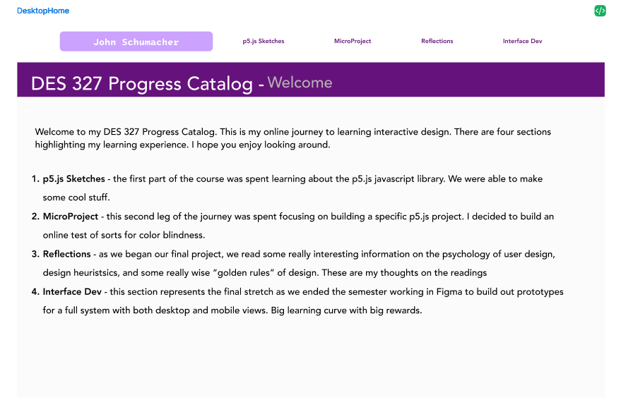
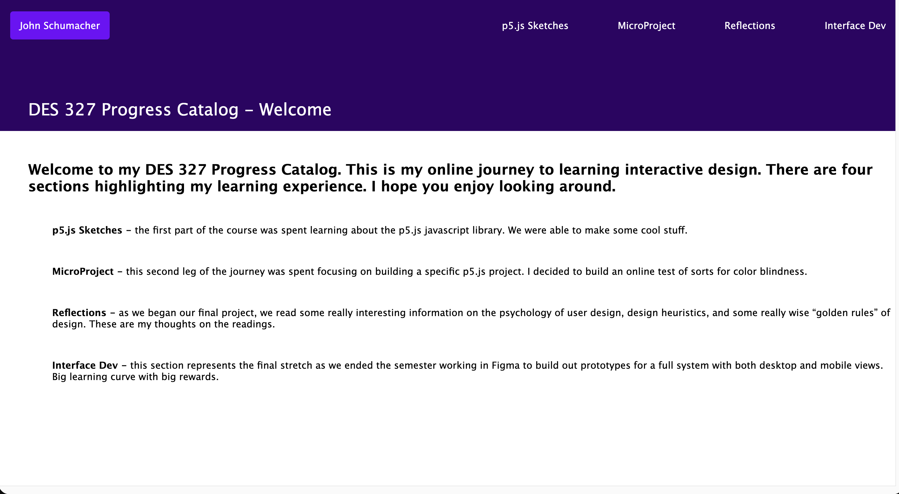
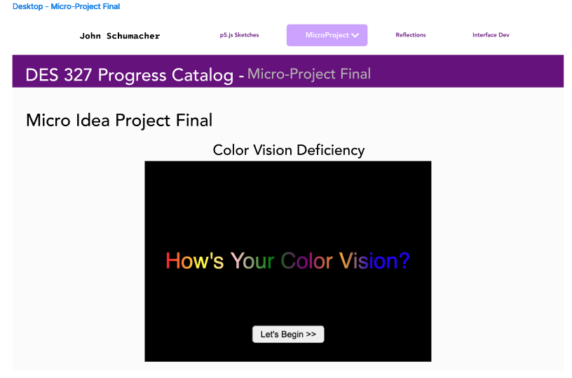
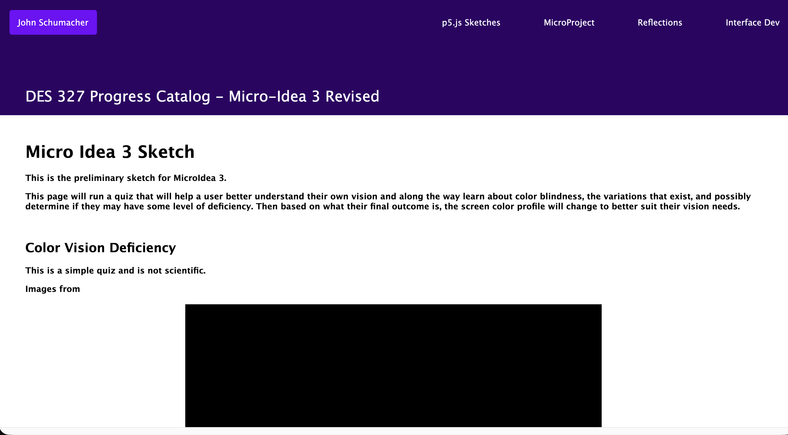
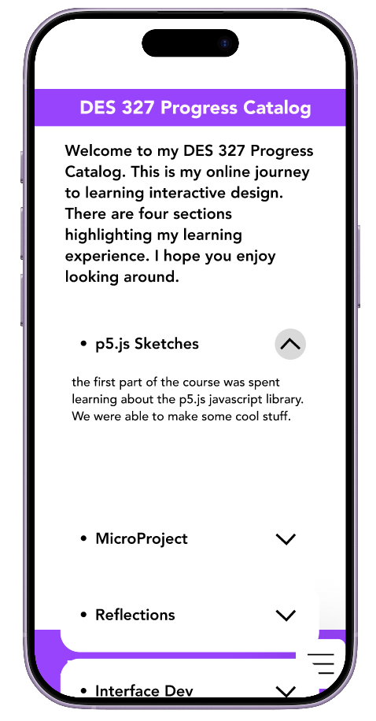
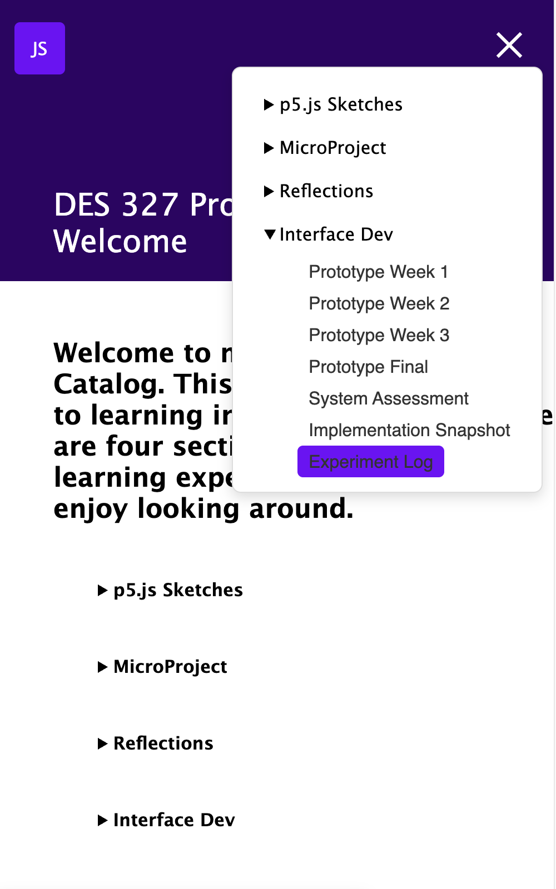
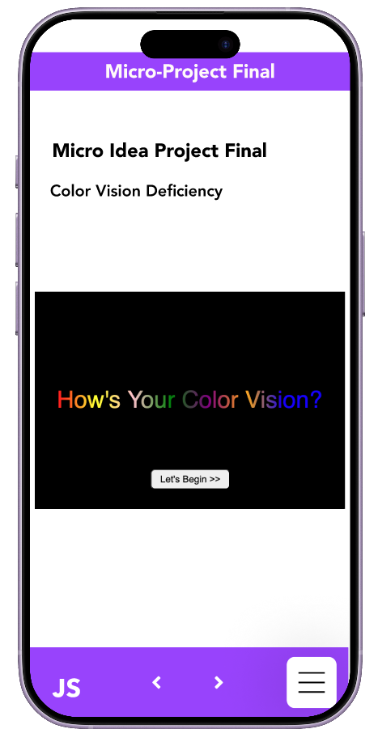
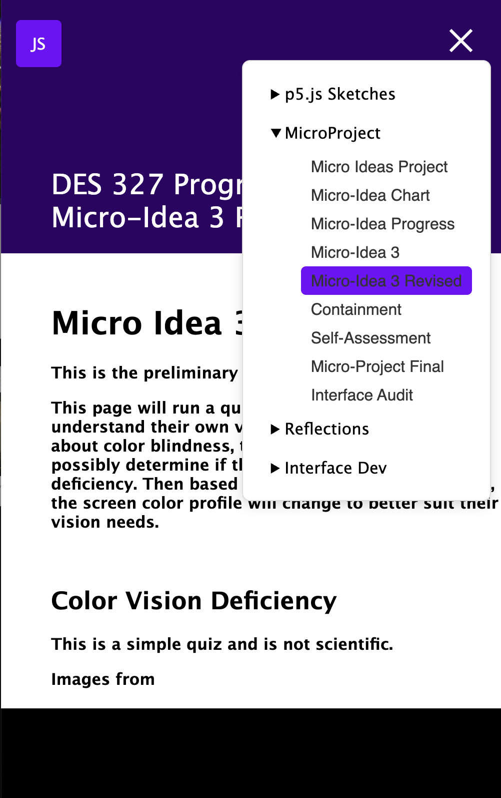

Interface Implementation - Experiment Log
Questions
What translated cleanly from Figma? What broke? What surprised you? What structural assumption did code expose? What would you revise with more time?
Log Entry:
I continued to work on the mobile menu trying to get the hamburger menu to work. I was frustrated that the icon I used couldn't convert to and "x", so I did more research and found a way to build the hamburger and animate it. I struggled with getting the submenus to work. I found a tutorial that looked promising, but still working with the code to see if I can make it work in my code. In the end, I couldn't get the option to work, so I decided to use the method I had used on the mobile home page to condense the text there using details elements. After styling, it works pretty well.
Overall, the translation of the desktop from Figma to code to screen went pretty well. I was able to implement my design effectively. I opted to change the color scheme a bit after I saw things on the screen. I like it better as it helps things stand out more and lends to the hierarchy.
On the mobile side, it was similar, with the exception of the mobile menu. I had originally planned to have the menus at the bottom of the screen and submenues slide in, but given the time I had available I had to simplify. I was able to get the hamburger menu to work with a new tool I learned about - the popover API. It allows for a dropdown menu with less styling requirements.
One thing I found out was that the p5.js canvases need more attention to make them work successfully. There is more I need to learn about how the elements work with the HTML structure to make them behave as I want. For example, in my MicroProject Final, I have a button that is in the center of the canvas. But once I started adjusting the screen size for the mobile view, that button was moving all over the place.
If I had more time, I would continue to try to make the mobile menus work as I'd envisioned. I think I could get them to work even if it meant revamping and building out separate pages to hold the menus. I would also like to continue to work on the p5.js canvases to make them more responsive and behave how I want them to.
Desktop Screenshots: Home page


Desktop Screenshot: MicroProject


Mobile Screenshot: Home page


Mobile Screenshot: MicroProject

